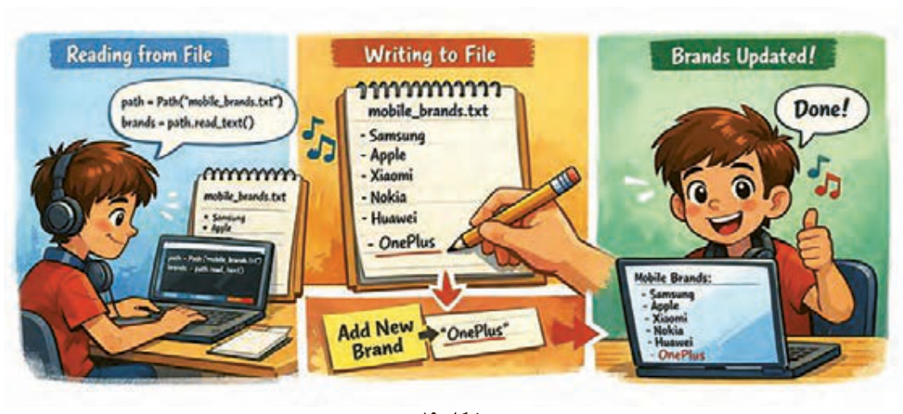
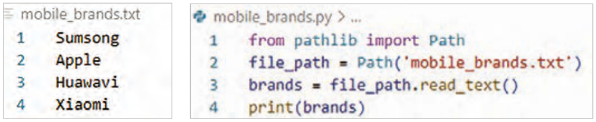
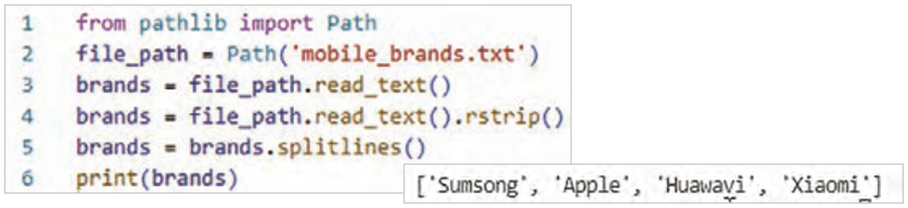
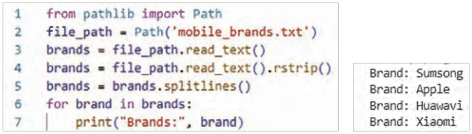
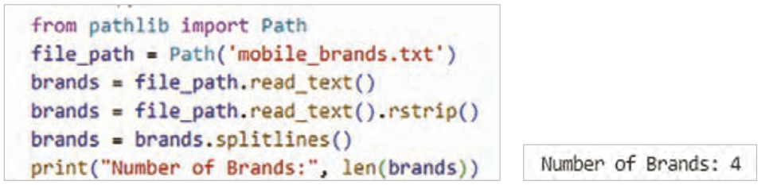
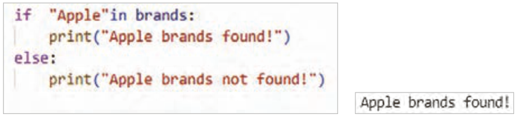

چرا نمیتوان همیشه از متغیرها برای نگهداری اطلاعات استفاده کرد؟
چه تفاوتی بین «ذخیره موقت اطلاعات در حافظه (RAM)» و «ذخیره در فایل» وجود دارد؟
اگر چند بار برنامه را اجرا کنید و هر بار در فایل بنویسید، چه اتفاقی برای محتوای قبلی میافتد؟
چه زمانی استفاده از فایل متنی ساده کافی است و چه زمانی بهتر است از JSON استفاده کنید؟
اگر مسیر فایل اشتباه باشد، برنامه چگونه باید رفتار کند؟
اگر قرار باشد یک برنامه فروشگاهی طراحی کنید، چه اطلاعاتی باید در فایل ذخیره شود و چرا؟
در پایان از هنرجو انتظار میرود
از کلاس "Path" و ماژول "pathlib" برای مدیریت مسیرها (Path Objects) استفاده کند.
محتوای فایلهای متنی را بخواند و دادهها را در آنها بنویسد، اضافه کند و فایلها را ایمن ببندد.
دادهها را از چندین فایل بخواند، محتوای آنها را ترکیب کند و با استفاده از حلقهها، مجموعهای از فایلها را پردازش نماید.
خطاهای رایج مانند "FileNotFoundError" و "ZeroDivisionError" را تشخیص داده و با استفاده از "try/except" از توقف برنامه جلوگیری کند و پیامهای خطای مناسب نمایش دهد.
ساختار "JSON" را درک کرده و دادهها را با استفاده از json.loads() بخواند و با json.dump() در فایل بنویسد.
استاندارد عملکرد
هنرجو باید بتواند با استفاده از شیء Path بهصورت ایمن و دقیق عملیات ایجاد، خواندن، نوشتن و مدیریت فایلهای متنی و JSON را انجام دهد و خطاها و استثناهای احتمالی را بهدرستی کنترل کند.
صفحه ۲۵۵
آشنایی با فایل در پایتون
در این واحد یادگیری با کار با فایلها و ذخیرهسازی دادهها آشنا میشوید تا برنامههای شما کاربردیتر و پایدارتر شوند. میآموزید چگونه دادهها را ذخیره و بازیابی کنید و با استفاده از مدیریت استثناها از توقف برنامه در شرایط غیرمنتظره جلوگیری نمایید.
همچنین با ماژول json آشنا خواهید شد که امکان نگهداری اطلاعات کاربران را فراهم میکند.
فرض کنید برنامهای برای ثبت مخاطبین یک تلفن همراه نوشتهاید. اگر برنامه را اجرا کنید و چند مخاطب وارد کنید، تا زمانی که برنامه باز است اطلاعات در حافظه نگهداری میشوند. اما اگر برنامه بسته شود، تمام اطلاعات از بین میروند. برای اینکه اطلاعات بهصورت دائمی ذخیره شوند و بعداً بتوانید دوباره به آنها دسترسی داشته باشید، لازم است از فایلها استفاده کنید. فایلها امکان ذخیره اطلاعات روی حافظه جانبی (مانند هارد دیسک) را فراهم میکنند.
شکل ۱۸
کار با فایل
اطلاعات زیادی در فایلهای متنی ذخیره میشوند؛ مثل نمرات دانشآموزان، لیست قیمتها، دادههای آب و هوا، ترافیک، یا متن یک داستان. برای اینکه یک برنامه بتواند از این اطلاعات استفاده کند، باید فایل را بخواند. اولین گام برای استفاده از یک فایل متنی، این است که فایل را وارد حافظه برنامه کنید، بعد از آن میتوانیدکل فایل را یکجا بخوانید یا آن را خطبهخط بررسی کنید. خواندن فایل به برنامه کمک میکند تا اطلاعات را تحلیل، نمایش یا تغییر دهد.

شکل ۱۹
صفحه ۲۵۶
ایجاد فایل متنی
ابتدا یک فایل متنی به نام mobile_bransd.txt بسازید و برندها را در آن بنویسید (هر برند دریک خط):
خواندن کل فایل در پایتون
برای خواندن کل محتویات فایل از کتابخانه pathlib استفاده کنید.

شکل ۲۰
توضیح کد:
from pathlib import Path
این خط کلاس Path را از کتابخانۀ pathlib وارد میکند. Path ابزاری برای کار با مسیر فایلها و پوشهها است و استفاده از آن سادهتر و امنتر از open معمولی است.
path = Path('mobile_brands.txt')
در اینجا path یک کلاس است که برای مدیریت مسیر فایلها ساخته شده است. با نوشتن:
path = Path('mobile_brands.txt')
یک نمونه (object) از کلاس Path ساخته میشود. این نمونه میداند که فایل mobile_brands.txt کجاست، ولی هنوز خود فایل باز نشده یا خوانده نشده به عبارت ساده: path فقط نشانی فایل روی رایانه را نگه میدارد.
وقتی مینویسید path.read_text() آن وقت فایل باز و خوانده میشود، یک Path object ساخته شده است که به فایل mobile_brands.txt اشاره میکند. چون این فایل در همان پوشهای است که فایل پایتون (py.) قرار دارد، فقط نام فایل کافی است. اگر فایل در پوشهای دیگر بود، باید مسیر کامل یا نسبی آن را بدهید.
brnds = path.read_text()
با متد read_text کل محتوای فایل خوانده میشود. نتیجه بهصورت یک رشته (string) در متغیر contents ذخیره میشود. هر خط فایل در رشته با کاراکتر \n جدا شده است.
صفحه ۲۵۷
محتویات brands درخروجی چاپ میشود.
print(brands)
خروجی مثال:
شکل ۲۱
حذف خط خالی اضافی: گاهی read_text() یک خط خالی اضافی در انتهای فایل ایجاد میکند. برای حذف آن میتوانید از متد rstrip استفاده کنید.
brands = brands.rstrip()
حالا خروجی تمیز و بدون خط خالی نمایش داده میشود.
مسیرهای نسبی و مطلق فایلها
آدرس نسبی و مطلق مانند داشتن یک نقشه دقیق برای دسترسی به فایلهای شماست. آدرس مطلق تضمین میکند که برنامه شما روی هر سیستمی، دقیقاً همان فایل را پیدا کند؛ اما آدرس نسبی به شما کمک میکند کدی بنویسید که بدون تغییر، در هر پوشهای جابجا شود و باز هم فایلهای مورد نیازش را بیابد.
وقتی نام فایلی مثل mobile_brands.txt را به Path میدهید، پایتون در پوشهای که فایل در حال اجرا (یعنی برنامه .py شما) در آن قرار دارد، جستجو میکند. گاهی اوقات، بسته به نحوه سازماندهی کارهایتان، فایلی که میخواهید باز کنید ممکن است در همان پوشه برنامه شما نباشد. مثلا، ً شاید برنامههایتان را در پوشهای به نام py_progs و داخل آن پوشهای به نام text_files برای جدا کردن فایلهای متنی از برنامهها نگهداری کنید. با اینکه text_files داخل py_progs است، اگر فقط نام فایلی را در text_files به Path بدهید، کار نمیکند؛ چون پایتون فقط در py_progs جستجو میکند و متوقف میشود؛ به text_files نگاه نمیکند. برای اینکه پایتون بتواند فایلها را از پوشهای غیر از پوشه برنامه شما باز کند، نیاز به مسیر صحیح دارید.
شکل ۲۲
صفحه ۲۵۸
دو راه برای مشخص کردن مسیر فایلها در برنامهنویسی وجود دارد:
آدرس نسبی (Relative File Path): این آدرس به پایتون میگوید که مکان مورد نظر را نسبت به پوشه برنامه در حال اجرا پیدا کند. از آنجایی که text_files داخل py_progs است، باید مسیری بسازید که با پوشه text_files شروع شود و به نام فایل ختم شود. نحوه ساخت این مسیر اینگونه است:
path = Path('text_files/filename.txt')
آدرس مطلق (Absolute File Path): در این نوع آدرس دهی شما میتوانید دقیقاً به پایتون بگویید فایل در کجای رایانه شما قرار دارد، صرف نظر از اینکه برنامه در حال اجرا کجاست. اگر آدرس نسبی کار نکرد، میتوانید از آدرس مطلق استفاده کنید. مثلا، ً اگر text_files را در پوشهای غیر از py_progs قرار دادهاید، دادن آدرس 'text_files/filename.txt' کافی نیست؛ چون پایتون آن را فقط داخل python_work جستوجو میکند. در این حالت، باید آدرس مطلق را بنویسید تا مشخص شود پایتون کجا را جستوجو کند. آدرسهای مطلق معمولاً بلندتر هستند، چون از پوشه ریشه سیستم عامل شروع میشوند:
با استفاده از آدرسهای مطلق، میتوانید فایلها را از هر نقطهای در سیستم خود بخوانید. برای شروع، سادهترین کار این است که فایلها را در همان پوشه برنامه خودتان یا در پوشهای مانند text_files درون پوشه برنامه نگهداری کنید.
کار با محتویات فایل
بعد از خواندن فایل متنی، محتوای آن در برنامه بهصورت یک رشته (string) در اختیارشما قرار میگیرد.
تبدیل محتوا به لیست: برای اینکه بتوانید روی هر برند تلفن همراه جداگانه کارکنید، لازم است متن فایل را به لیستی از خطوط تبدیل کنید.
حالا هر برند یک عضو از لیست است و میتوانید با آن کارکنید.
-splitlines() رشته متنی را به لیستی از خطوط تقسیم میکند.

شکل ۲۳
صفحه ۲۵۹

شکل ۲۴
شمارش دادهها: مثلاً تعداد برندهای موجود در فایل:

شکل ۲۵
جستوجو در محتویات فایل
بررسی اینکه آیا یک برند خاص در فایل وجود دارد یا نه:

شکل ۲۶
Page 254
Learning unit 2
Have you ever thought about this
Why can't variables always be used to keep information?
What is the difference between "temporarily storing information in memory (RAM)" and "storing in a file"?
If you run the program several times and write to a file each time, what happens to the earlier content?
When is a simple text file enough and when is it better to use JSON?
If the file path is wrong, how should the program behave?
If you were to design a shop program, what information would need to be stored in a file and why?
By the end, the student is expected to
Use the class "Path" and the module "pathlib" to manage paths (Path Objects).
Read the content of text files and write data to them, append, and close the files safely.
Read data from several files, combine their content and process a set of files using loops.
Recognise common errors such as "FileNotFoundError" and "ZeroDivisionError" and, using "try/except", prevent the program from stopping and show suitable error messages.
Understand the structure of "JSON" and read data with json.loads() and write it to a file with json.dump().
Performance standard
The student must be able, using the Path object, to safely and exactly create, read, write and manage text and JSON files and to correctly control possible errors and exceptions.
Page 255
Getting to know files in Python
In this learning unit you get to know working with files and storing data so that your programs become more practical and more stable. You learn how to store and retrieve data and, using exception handling, prevent the program from stopping in unexpected situations.
You will also get to know the json module, which makes it possible to keep the users' information.
Suppose you have written a program for recording the contacts of a mobile phone. If you run the program and enter some contacts, the information is kept in memory as long as the program is open. But if the program is closed, all the information is lost. For the information to be stored permanently and for you to be able to reach it again later, files must be used. Files make it possible to store information on secondary storage (such as a hard disk).
Figure 18
Working with a file
A lot of information is stored in text files; such as students' scores, price lists, weather data, traffic, or the text of a story. For a program to be able to use this information, it must read the file. The first step in using a text file is to bring the file into the program's memory; after that you can read the whole file at once or go through it line by line. Reading a file helps the program analyse, show or change the information.
Figure 19
Page 256
Creating a text file
First make a text file named mobile_bransd.txt and write the brands in it (each brand on one line):
Reading the whole file in Python
To read the whole content of the file, use the pathlib library.
Figure 20
Explanation of the code:
from pathlib import Path
This line brings the class Path in from the pathlib library. Path is a tool for working with the paths of files and folders, and using it is simpler and safer than the ordinary open.
path = Path('mobile_brands.txt')
Here path is a class that was made for managing the paths of files. By writing:
path = Path('mobile_brands.txt')
an instance (object) of the class Path is made. This instance knows where the file mobile_brands.txt is, but the file itself has not yet been opened or read. In simple words: path only holds the address of the file on the computer.
When you write path.read_text(), then the file is opened and read; a Path object has been made that points to the file mobile_brands.txt. Since this file is in the same folder as the Python file (.py), only the file name is enough. If the file were in another folder, you would have to give its full or relative path.
brnds = path.read_text()
With the method read_text the whole content of the file is read. The result is stored as a string in the variable contents. Each line of the file is separated in the string by the character \n.
Page 257
The content of brands is printed in the output.
print(brands)
Example output:
Figure 21
Removing the extra empty line: sometimes read_text() makes an extra empty line at the end of the file. To remove it you can use the method rstrip.
brands = brands.rstrip()
Now the output is shown clean and without the empty line.
Relative and absolute paths of files
A relative and an absolute address are like having an exact map for reaching your files. An absolute address guarantees that your program finds exactly the same file on any system; but a relative address helps you write code that, without change, moves into any folder and still finds the files it needs.
When you give the name of a file like mobile_brands.txt to Path, Python searches in the folder where the running file (that is, your .py program) is. Sometimes, depending on how you organise your work, the file you want to open may not be in the same folder as your program. For example, you might keep your programs in a folder named py_progs and inside it a folder named text_files to separate the text files from the programs. Even though text_files is inside py_progs, if you give Path only the name of a file in text_files, it does not work; because Python searches only in py_progs and stops; it does not look at text_files. For Python to be able to open files from a folder other than your program's folder, you need the correct path.
Figure 22
Page 258
There are two ways to specify the path of files in programming:
Relative File Path: this address tells Python to find the wanted place relative to the folder of the running program. Since text_files is inside py_progs, you must build a path that starts with the folder text_files and ends with the file name. The way to build this path is as follows:
path = Path('text_files/filename.txt')
Absolute File Path: in this kind of addressing you can tell Python exactly where on your computer the file is, no matter where the program is running. If the relative address did not work, you can use an absolute address. For example, if you have put text_files in a folder other than py_progs, giving the address 'text_files/filename.txt' is not enough; because Python searches for it only inside python_work. In this case you must write the absolute address so that it is clear where Python should search. Absolute addresses are usually longer, because they start from the root folder of the operating system:
With absolute addresses you can read files from any point of your system. To start, the simplest thing is to keep the files in the same folder as your own program or in a folder such as text_files inside the program's folder.
Working with the content of a file
After reading a text file, its content is given to you in the program as a string.
Converting the content to a list: to be able to work on each mobile brand separately, you need to convert the text of the file into a list of lines.
Now each brand is a member of the list and you can work with it.
splitlines() splits the text string into a list of lines.
Figure 23
Page 259
Figure 24
Counting data: for example the number of brands in the file:
Figure 25
Searching in the content of the file
Checking whether a specific brand exists in the file or not: